4. Assumptions and Dependencies
6. Inter-component Communication Scenarios
6.8.1 GC Handshaking and Initialization
6.8.2 Garbage Collector Shutdown
6.8.3 Class Preparation
6.8.4 Java* Thread Initialization and Termination
6.8.5 Thread Suspension and Root Set Enumeration
6.8.6 Root Set Enumeration for a Compiled Frame
6.8.7 Basic Stop-the-world Garbage Collection
6.8.8 Write Barriers
6.8.9 Read Barriers
6.8.10 Object Finalization during Garbage Collection
6.8.11 Individual Thread Control for Fully Concurrent GC
| Version | Version Information | Date |
| Initial version | Ricardo Morin, Nadya Morozova: document created | April 20, 2006 |
Copyright 2005 The Apache Software Foundation or its licensors, as applicable.
Licensed under the Apache License, Version 2.0 (the "License"); you may not use this file except in compliance with the License. You may obtain a copy of the License at http://www.apache.org/licenses/LICENSE-2.0.
Unless required by applicable law or agreed to in writing, software distributed under the License is distributed on an "AS IS" BASIS, WITHOUT WARRANTIES OR CONDITIONS OF ANY KIND, either express or implied. See the License for the specific language governing permissions and limitations under the License.
This document identifies the design components and the interfaces for implementing the Harmony Java* Virtual Machine in a modular fashion. The document is not intended to describe the design associated with specific implementations of OPEN components.
The intended audience includes a wide community of those interested in developing pluggable components for the Apache Harmony JVM.
This document uses the unified conventions for the DRL documentation kit.
The table below lists the key abbreviations used in this document and provides their definitions.
| Acronym | Definition |
| API | Application Program Interface |
| APR | Apache Portable Run-time Layer |
| DPGO | Dynamic Profile-guided Optimizations |
| EE | Execution Engine |
| EM | Execution Manager |
| GC | Garbage Collector |
| IR | Intermediate Representation |
| HLD | High-level Design |
| J2SE | Java* 2 Standard Edition |
| JCP | Java* Community Process |
| JCL | Java* Class Libraries |
| JIT | Just-in-time Compiler |
| JNI | Java* Native Interface |
| JPDA | Java* Platform Debugger Architecture |
| JSR | Java* Specification Request at the JCP |
| JVM | Java* Virtual Machine |
| JVMTI | JVM Tool Interface |
| OPEN | Open Pluggable Extensible iNfrastructure |
| OS | Operating System |
| PA, VMA | Platform and VM Accessors |
| TLS | Thread Local Storage |
| TM | Thread Manager |
| VM | Virtual Machine, same as JVM in current document |
The interfaces follow the Apache coding style http://httpd.apache.org/dev/styleguide.html.
The Apache Harmony is a clean room implementation of the Java* virtual machine and the Java* 2 Standard Edition (J2SE) class libraries. The Open Pluggable Extensible iNfrastructure (OPEN) is a JVM design consisting of pluggable modules. The key features of OPEN are: pluggability, extensibility, modularity, and performance.
The basis of the OPEN environment is the standard list of pluggable components. As viewed by OPEN, a managed run-time environment consists of the following components:
Note
The profile collector is an optional component, and it is not required for normal operation of the system. For details, see section 5.4 Deployment Model.
Depending on the configuration, the system can use multiple execution engine components, for example, an interpreter and optimizing JIT. Similarly, the system can be configured to use multiple profile manager components, for example, hardware and instrumentation-based profile collectors.
A component corresponds to one static or dynamic library. A managed run-time environment consists of several libraries linked statically or dynamically at run time:
The component manager code loads and initializes components. The component manager is a part of the OS portability layer because it cannot be separated from the OS dynamic libraries support.
The components use functional interfaces for communication. Each component exposes the OPEN default interface to communicate with the component manager, and one or more interfaces for communication with other components.
An interface is a pointer to a table of function pointers to pure C methods. OPEN interfaces have string names, which unambiguously identify their function table layout, see Appendix B, OPEN Interface Names.
The overall organization of the run-time environment and involved interfaces distribution are displayed on Figure 1, where boxes represent components, and lollipops represent exposed interface groups.
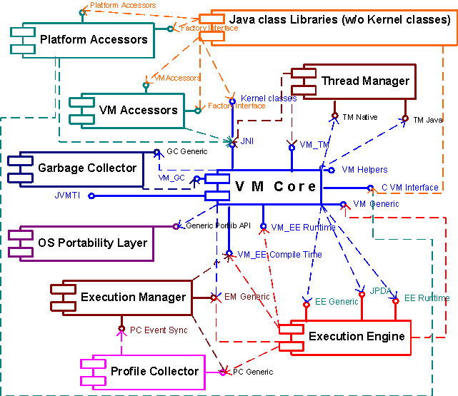
Figure 1: OPEN Components
5.2.3.1 Extensibility of Component Interfaces
You can extend OPEN interfaces to enable additional functionality. The OPEN components with extended interfaces must plug into the existing OPEN environment and must work correctly with older versions of other OPEN components and interfaces. To maintain backward compatibility, the extensions of OPEN interfaces must follow the major and minor numbering scheme.
The Invocation API requires co-existence of several VM instances. That is why, component instances have been introduced. An instance of a component is a pointer to its interface. The memory chunk after the reference to the function table stores the instance specific data.
The OS portability layer always has one instance, its interfaces are static, and the functions of these interfaces are called as ordinary functions to avoid additional indirection. Other components have the same number of instances as the VM core does.
Background
The OPEN components, interfaces and instances map directly
to classes, interfaces and objects in the Java* object oriented model. The VM component
encapsulates common features, attributes and properties of
virtual machines, and maps to a Java* class.
VM interfaces are tables of methods implemented and exposed
by the class. If several virtual machines exist in the same
address space, they all expose the same interfaces. These VM
instances are instances of the VM class, or objects.
The component
manager enables explicit creation of component instances
by exposing the create_instance() function,
which corresponds to the Java* operator
new(). Interfaces with only one instance
correspond to static class methods in Java.
OPEN does not support dynamic class loading, and all components are initialized in a load time.
The sections below define each component and provide information on exported interfaces, dependencies and other component specifics.
The Java* class libraries (JCL) comprise the Java* code included into Apache Harmony distribution, which directly implements or supports the declared profile, for example, J2SE. The Java* class libraries include trusted code, so that the standard security restrictions for Java* code do not apply to this component.
5.3.1.1 Use cases
The Java* class libraries component interacts with unmanaged code through the services provided by the virtual machine. It is similar to all other managed code in that aspect, but it has the advantage of having more options for functionality and performance. The options are described below.
java.lang.Object and
java.lang.Thread classes. These classes
cannot be implemented entirely in managed code, since
some of their functionality has to map directly to the
operating system resources. The functionality that needs
to be implemented in kernel classes in unmanaged code is
grouped in a separate interface. This acts connects the
class libraries and the virtual machine.
VM and platform accessors (VMA and PA) are a set of singleton classes that can access the functionality normally unavailable to managed code. Each accessor is designed for a specific purpose: platform accessors provide direct access to the unmanaged heap memory, and VMA provide extended VM functionality, which is not available through the public Java* API. Instances of VMA and PA are obtained through the accessor factory, which performs security checks to ensure that only Java* class libraries create and manipulate accessors.
An accessor is created when the class libraries code
requests a reference to it, and exists until all references
to the accessor are lost and the
AccessorFactory class is unloaded. VM accessors
operate as the normal Java* classes during
garbage collection.
Note
The default PA and VMA can be implemented by means of the conventional JNI API. For better performance, the virtual machine or the JIT compiler may recognize accessor method calls and in-line them efficiently. However, this is not required for the default VM and JIT implementation.
5.3.2.1 Platform Accessors
The platform accessors provide the class library with access
to unmanaged code, and hide the actual access implementation
details. The primary purpose of the
PlatformAccessors API is to enable the managed
code to pass parameters and query results when dealing with
unmanaged code. The platform accessor classes are
VM-independent and are linked with the underlying platform.
Platforms accessors include:
MemoryAccessor provides managed code direct
access to the unmanaged heap memory.
StringAccessor enables managed code to
convert managed strings to unmanaged strings and vice
versa, and allows comparing managed and unmanaged
strings.
VMA is a set of classes that are tied to the VM but remain portable because they can be implemented via the conventional JNI with certain functionality emulations. An optimized version can use VM-specific support functions in order to achieve better performance. The VM accessors include the following:
ObjectAccessor
provides managed code with reflection-like functionality,
which complements the reflection API by enabling:
ArrayAccessor allows manipulating garbage
collection for array types, and provides access to array
elements by-passing the bounds checking
ThreadStackAccessor provides extended
information about the current stack trace.
The security model for the accessor packages is based on the
assumption that each accessor class instance is unique in
the VM and can only be obtained with the help of the
AccessorFactory class.
5.3.2.3 Security Model
Platform and VM accessors can be used by the Java* class libraries, and not by other managed code, such as application or applet code executed by the VM. This model is enforced by the accessor factory, which provides references to the accessors. Once the managed code gets a reference to an accessor instance, it can work with that instance without any further security checks, which improves performance.
The accessor factory forbids using accessors for applets and discourages applications as strongly as possible. You can use the following techniques of implementing the security check in the accessor factory:
Accessor reference,
AccessorFactory.getXXXAccessor(), check that
the class trying to obtain the reference has been loaded
by a boot class loader. This is sufficient for applets,
but is easily changed by applications by adding the
classes to boot.class.path in command-line
Java* arguments.
The VM core is the central part of overall VM design. The VM core includes all standard VM components: the class loader, the verifier, the TI and JNI frameworks, the exception handling, and stack walking components. To interact with these, the core virtual machine exposes a number of interfaces.
5.3.3.1 Exported interfaces
VM Generic provides interface access to
object layout and class layout to enable operations with
classes, fields, and methods.
VM_EE Compile time provides compile-time
interfaces to the execution engine, such as exception
handler registration, management of EE-specific code and
data storage for methods.
VM_EE Runtime provides run-time interfaces
to the execution engine, such as root set enumeration,
managing safe suspension points, binary code patching,
and event subscription and handling.
VM Helpers is used by the managed code to
perform tasks, which involve access to VM-specific data,
such as object allocation, getting virtual tables for
given class, and acquiring a lock. Calls to the VM helper
implementations are inserted by the JIT during
compilation. Calls are made from the VM via the
VM_EE Compile time interface. For details,
see section 5.3.3.2 VM helpers.
VM_GC includes basic interfaces required by
the garbage collector, for such operations as root set
enumeration request and object finalization.
VM_TM provides an interface for the object
layout, so that a memory chunk in the object can be used
by the thread manager for synchronization purposes and
for allocation of TM-specific data in the
java.lang.Thread object.
C VM interface supports the Java* class library natives, which do not follow the
OPEN component management and extensibility models. This
JNI-like interface acts as a gateway between the Java* class library natives and other
components, and supports pluggability of class library
components. The interface is defined in a form, which
does not comply with OPEN, to be compatible with
third-party class libraries.
JNI provides standard JNI
support used by native libraries, and includes the
invocation API.
JVMTI supports the debug, analysis and
extension tool interfaces.
Kernel classes interface ports the class
libraries to the virtual machine. This interface provides
all VM-dependent functionality declared in the Java* Class Libraries APIs, and specific methods
and fields required for the VM operation. This implements
the interdependence between the Java*
classes and the VM data structures.
The VM helpers are functions that JIT-compiled code calls during its execution to access VM-specific data. The JIT queries the VM for the addresses of the VM helpers and injects the proper entry point for a given helper during code generation. The VM helpers are responsible for:
The VM helpers can be provided in one of two forms:
The VM core allows plugging in third-party run-time helpers used by third-party execution engines without extending the OPEN standard. All run-time helpers must be provided at least in the direct-call form. Support for in-lining of run-time helpers comprises the following aspects:
The thread manager supports threading inside the virtual machine and the class libraries. The purpose of the thread manager is to adopt the OS threading functions to the managed run-time environment and to hide the underlying platform specifics from the other VM components. The implementation of thread management uses the black-box approach, which exposes two interfaces:
The thread manager is based on a subset of the Apache Portable Run-time (APR) layer accessed through the OS Portability layer component. The threading subsystem used by the OPEN components consists of three layers: the portability layer at the bottom, native threading layer in the middle and the Java* layer on top, as shown in Figure 2.
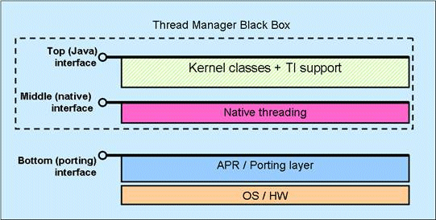
Figure 2: Structure of the Thread Management Subsystem
The Java* and native threading layers make up the thread manager black-box component. The bottom layer is platform-dependent and is responsible for porting the thread manager on a variety of platforms.
The Java* layer of the thread manager does the following:
The native layer of the thread manager does the following:
The thread manager functionality is used by various components, such as the kernel classes and the garbage collector. These components interact with different parts of the thread manager: with Java* threads and objects or with the middle layer of native threading. When the component operates with the Java* objects and threads, it calls the top Java* interface functions. Otherwise, it calls the middle native interface functions.
The OS portability layer is platform-dependent and is responsible for porting the thread manager on a variety of platforms with minimal effort. You can also plug in commercial threading libraries, but make the library compliant with the APR threading interfaces first.
5.3.4.1 Exported interfaces
Thread manager exposes the Java* and native interfaces providing several groups of functions.
Table: Thread Manager Functionality Groups
| Java* interface | ||
| Header files | Used by | Functions |
|
|
Classes: |
|
| Native interface | ||
|
|
Garbage Collector, The java.util.concurrent classes
|
|
One of the key features of the OPEN thread manager is the safe thread suspension functionality. The purpose of the safe suspension mechanism is to ensure that suspended thread can be safely explored by the garbage collector during the enumeration of live references. Safe suspension also guarantees that the suspended thread holds no system-critical locks, which can be requested by other components, such as the locks associated with the native heap memory.
The garbage collector scans the memory, collects memory, and supports the VM accessors in order to manipulate with Java* objects directly within Java* class libraries. The garbage collector performs performance effective memory allocation.
5.3.5.1 Exported interfaces
GC Generic supports object allocation, root set
enumeration, and write barriers, and performs miscellaneous
operations, such force_gc(), free_memory(), and
total_memory().
The GC interface consists of two parts: interfaces that the GC provides to the VM and the interfaces that the GC requires from the VM. Below is a high-level description of these APIs. Some of these APIs (such as object allocation) will be in-lined by the JIT for performance reasons.
APIs provided by the GC:
APIs required by the GC:
The OS portability layer component provides portable wrappers for OS calls to hide platform specifics from OPEN components. The component complies with the Apache Portable Run-time layer and provides a set of additional VM-specific functions. The layer supports static linking, and can also support dynamic linking.
5.3.6.1 Exported interfaces
The exported interfaces of the OS portability layer are responsible for the following:
The important part of the OS portability layer is the component manager, which enables loading and subsequent initialization of VM components. During the loading stage, the component manager queries the OPEN default interface from each loading component, and then makes this information available at the initialization stage via interface queries. The component manager also enables instance creation for OPEN interfaces.
The portability layer does not include functional tables, and only one instance of the layer exists.
The OPEN model supports multiple pluggable execution engines and profile collectors, which enables developers to implement various profile-guided JIT compilation techniques. The OPEN model also introduces the execution manager, which is the central driver component responsible for managing execution engines and profile collectors. The execution manager (EM) is a container for profile collectors and execution engines, which does the following:
The execution manager, execution engines and profile collector interfaces can be implemented in one component or in one binary library. Besides, different instances of the execution engine or the profile collector are not necessarily different JITs or profile collectors. For example, the execution manager can use several instances of the same JIT to manage re-compilation.
Note
You can plug your own execution manager to implement your own recompilation scheme, but only one execution manager can exist in the system.
5.3.7.1 Exported interfaces
EM Generic is the main interface of the
execution manager. This is the base interface defined by
OPEN, which exposes the following functionality:
do_method(), which the VM calls to
execute a method.PC Event Callback is used by profile
collectors to notify the execution manager that a certain
profile collection state has been reached or that a
certain event has occurred.PC Generic
interface of the profile collector component.
The OPEN model supports multiple pluggable profile collectors. The profile collector component implements a particular profile collection technique. A single profile collector can be used by different components, such as the VM, the execution engines, the execution manager or the garbage collector.
Examples of profiles that can be collected by the profile collector include the following:
The OPEN interface model defines the means of interaction between the execution manager and profile collectors.
5.3.8.1 Exported interfaces
PC Generic is used by the execution manager to
set up profile collection and to get access to collected
profile data. The EM can periodically poll this interface to
monitor profile data and act accordingly.
The execution engine component executes managed code or prepares it for execution and includes:
5.3.9.1 Exported Interfaces
EE_Generic provides access to the generic
execution engine functionality, such as initialization
and de-initialization, parameterized execution, and
compilation of a specific method.
EE_Runtime provides access to run-time
support execution engine functions, such as:
EE_JPDA supports the VM with of
execution-specific JPDA features, the tools interface in
particular. This includes:
Note
The VM can use the EE_Generic interface
to provide appropriate parameters and to request the
JIT to compile or the interpreter to execute a managed
method in a specified mode. Therefore, the JVMTI event
generation mechanism is supported not by the
EE_JPDA interface, but by the
EE_Generic interface.
The managed code is derived from Java* code and includes the Java*
.class files interpreted or compiled by a
just-in-time or an ahead-of-time-compiler, and the resultant
executable binaries. In contrast, unmanaged code
includes native code not directly derived from bytecode.
Type-safety is not enforced on unmanaged code.
During the execution of managed code, it calls VM helpers to perform such operations as creating a new object or checking the class cast compatibility. Normally, managed code interacts with the VM components via VM helpers. The VM helpers or their fast paths can be in-lined into managed code and become a part of managed code.
The OPEN framework fully supports the JVM tool interface and complies with the Java* Platform Profiling Architecture in implementing the debugging and profiling support.
Note
Harmony JVMTI extensions of exceptional value might be proposed to the JCP to become standard interfaces in the JSR that defines the next generation of JVMTI.
A managed run-time based on the OPEN specification is delivered as the following set of files:
OPEN components can be delivered as a part of the VM core executable, that is, they can be statically linked with the VM core. Specific components, such as the garbage collector, can be delivered as dynamically linked libraries and can be loaded by the component manager during execution. A functioning OPEN-compliant virtual machine must have at least the following components to be able to execute applications properly:
The profile collector component is optional and its absence does not prevent the managed run-time from executing applications properly.
The OPEN header files are intended for developers of
alternative OPEN components, and are not required for
developers of managed run-time applications. This is why
OPEN and usual JVM header files, such as jvm.h
and jni.h are separated: OPEN headers are
located in the include/open/ directory, and the
jvm.h and jni.h are located in the
include directory, for details, see section 8.2.3 Directory Structure.
Common data types are defined by the JNI and JVMTI specifications. To pass any other data, use the abstract handles and functional interfaces.
In addition to binaries, components, and interface pointers, the system also implements and operates on entities of finer granularity, for example, objects corresponding to managed classes, methods and virtual method tables. Each object of the type has at least the following major characteristics:
Objects of the same or different types, and components and objects follow a specific mode of interaction. This section defines the minimal set of object types, which can exist in the system, their characteristics and mode of interaction, as well as their programmatic representation in the OPEN interfaces. This section establishes whether the objects are opaque handles or transparent C structures, and describes their interfaces. In the following sub-sections, objects types are classified and described by their defining component.
The VM core component defines a set of handles to methods. These handles can be obtained as a request to the VM core or can be passed as arguments when the VM core calls the method of another OPEN component. Most handles are similar to the reference types in the JNI specification and additionally contain entities, which enable the code to reference the object and hide the object structure. Compared to the JNI specification reference types, the VM core handles are more effective because they directly reference the internal VM structures for the corresponding objects.
5.6.1.1 VM Handles
Open_Class_Handle is a reference to the
class structure corresponding to the
java.lang.Class object.
Open_Field_Handle is a reference to a field
of a class object.
Open_VTable_Handle is a reference to the
list of virtual methods belonging to a class.
Open_Method_Handle is a reference to a
method of a class object.
Open_Class_Loader_Handle is a reference to
the class loader structure corresponding to the
java.lang.ClassLoader object.
Open_Managed_Object_Handle is a direct
reference to a Java* object.
Open_Vector_Handle is a reference to a
Java* array object.
Open_Native_Code_Ptr is a reference to the
executable code generated at run time.
Open_Stack_Frame_Context is a structure with
a snapshot of machine registers, which enables register
updates: the references to the locations of saved context
are used instead of copies of register values.
5.6.2.1 Thread Control Structures
The thread manager (TM) requires that each thread is
registered, or attached, before its functions can be
called. The tmn_attach() function attaches a
thread to the native layer of
the thread manager, and the tmj_attach()
function makes the thread available for the Java* threading operations. In other words, the thread
attached to the native layer of the thread manager is the
native thread and the thread attached to Java* layer is the Java* thread.
When registered with the thread manager native layer, each
thread obtains a control structure, which maintains all the
data required for the operation of the thread. A thread
control structure contains various thread-specific
information, such as thread state, attributes, references to
the OS-specific thread structures, synchronization aids, and
other. After calling the tmn_attach() function,
a component receives an opaque handle to the thread control
structure. The handle can later be used for miscellaneous
threading operations.
Note
The actual content of a thread control structure is implementation-specific and is not exposed to other OPEN components.
To become a Java* thread, a thread also
needs to be attached to the Java* layer of
the thread manager. For that, the tmj_attach()
function of the Java* layer associates the
thread with the appropriate java.lang.Thread
object.
5.6.2.2 Thread groups
The thread manager enables co-existence of multiple groups of threads, for example, a group of Java* threads and GC threads not visible for Java* applications. Each thread maintained by the thread manager belongs to a specific thread group, as shown in Figure 3.
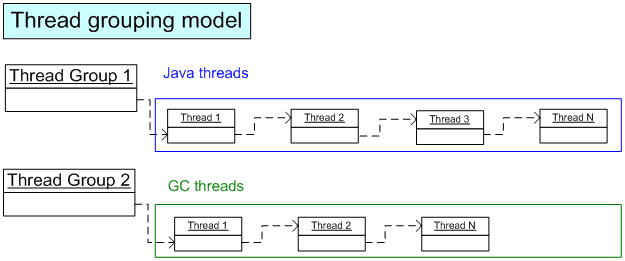
Figure 3: Thread Grouping Model
The thread manager provides a set of functions for iterating over the list of threads within a specific group. A specific system-wide lock is used to prevent concurrent modifications of the groups array and the thread lists. This lock is acquired internally during thread creation, deletion and iteration over the thread list.
5.6.2.3 Synchronizers
The thread manager synchronizers are functional modules used for thread synchronization. Certain synchronizers can have internal thread manager data structures associated with them, others can delegate function calls directly to the appropriate synchronizers provided by the APR. A typical implementation of synchronizers within the thread manager can be based on two fundamental APR primitives: mutex and conditional variable, as shown in Figure 4.
Figure 4: Components of TM Synchronizer
Where:
wait()
operation on the conditional variable or when the thread
gets blocked while acquiring a mutex.
java.lang.Object.
Park and Unpark are the lock
support primitives used in the
java.util.concurrent package.
The hierarchy demonstrated by Figure 4 is provided as an example and is optimized for APR code reuse. Other implementations of the Thread Manager component are free to choose a different hierarchy scheme and APR primitives to be based on. Note that thread manager does not expose any of the internal structures of synchronizers to the external components. All synchronizers are referenced by means of opaque handles, similarly to thread control structures.
5.6.2.4 Monitors
In Java, every object must hold a lock, and the lock must be highly space-optimized. To address this problem, the thread manager provides the thin monitor in addition to the conventional mutex and conditional variable. The thin monitor holds a special type of lock optimized for space consumption and single-threaded usage. An example of inflatable monitor implementation is a thin-fat lock technique, which works as follows:
OPEN components use thin monitors to save memory when the thread contention is not expected to be high, and the conventional mutex and conditional variables are used to achieve better scalability in case of high contention.
Java* monitors in the thread manager are built on top of thin monitors. This way, Java* monitors enable space efficiency of thin monitors by allocating the lock structure for these monitors directly in the Java* objects. You can apply additional space compaction or other optimization technique to thin monitors in your implementation.
The execution engine object model defined by the OPEN interface specification is completely represented as OPEN components and interfaces. Extended execution engine interfaces are free to introduce new objects described as OPEN components and interfaces or accessed via handles. Execution engines intensively use the VM object model represented as handles to internal class, method, and field structures, as well as other entities.
This section describes the dynamic behavior of an OPEN-conformant run-time environment and contains most key scenarios of communication between the OPEN components. You can use the scenarios as use-cases for low-level design of OPEN interfaces, as guidelines for component implementers, and as additional examples for better understanding of the OPEN design.
All scenarios are labeled with a hierarchical mnemonic code, which is used for identification of supplementary files and other additional material. Most scenarios are described by both textual explanation and UML diagrams.
Table: Mnemonic Code in Scenario Names
| Code | Scenario Name | Code | Scenario Name |
| BC | Basic inter-component communication | ME | Method execution |
| BC.CLD | Component loading | ME.EM | VM and execution manager interaction |
| BC.INIT | VM Instance creation | ME.JIT | Compilation by the JIT compiler |
| BC.CI | Component instantiation and interface query | ME.PGR | Profile-guided recompilation by JIT |
| EX | Exception handling | SF | Stack unwinding |
| EX.THR.JIT | Exception throwing from a compiled frame | SF.JIT.INL | Unwinding of a compiled frame |
| EX.THR.UNM | Exception throwing from an unmanaged frame | SF.JIT.INL | Unwinding of an in-lined compiled frame |
| EX.HND | Exception handling | TM | Thread management |
| MM | Memory management for managed code and garbage collection | TM.NEW | Thread creation |
| MM.GC.INIT | Garbage collector handshaking and initialization | TM.END | Thread completion |
| MM.GC.SHUT | Garbage collector shutdown | TM.SUS.ALL | Stop-the-world thread suspension |
| MM.GC.CLSS | Class preparation | TM.SUS | Thread suspension |
| MM.GC.THR | Java* thread initialization and termination | TM.LCK | Thread locking |
| MM.GC.RSE | Thread suspension and root-set enumeration in a stop-the-world garbage collection | TM.LCK.MON | Conventional locking through monitors |
| MM.GC.RSE.JIT | Root set enumeration for a compiled frame | A | Accessors |
| MM.GC.STW | Basic stop-the-world garbage collection | A.NM | Access to native memory |
| MM.GC.WB | Write barriers | A.AL | Array locking |
| MM.GC.RB | Read barriers | A.OS | Object accessor and serialization |
| MM.GC.FIN | Object finalization during garbage collection | PM | Profile management |
| MM.GC.CONC | Individual thread control for fully concurrent GC | PM.PC.B | Basic interaction between the execution manager and profile collector |
A high-level overview of basic inter-component communication scenarios is in the Component Structure section, and the scenarios focus on dynamic aspects of component lookup, loading, instantiation, and other functionality invariant to JVM specifics.
This scenario describes how an OPEN-conformant system complies with the JNI invocation API during the VM instance creation process. Figure 5 displays the dependencies of the components involved.
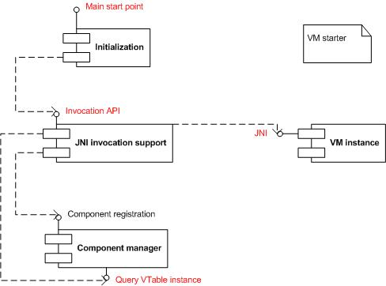
Figure 5: VM Starter
Figure 6 illustrates the VM instance creation process, which complies with the JNI invocation API in the way the VM requester communicates with the global JNI invocation support component. Note that component libraries lookup process is not defined by the OPEN framework and is an implementation-specific feature.
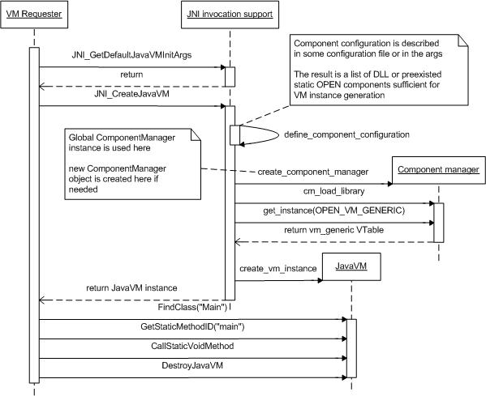
Figure 6: VM Instance Creation
This scenario describes how the component manager of an OPEN-conformant system loads components and interacts with the binaries implementing them as shown in Figure 7.
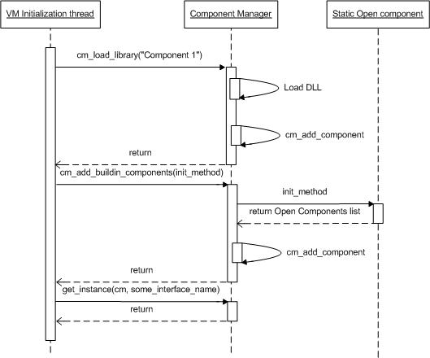
Figure 7: Component Loading
This scenario describes how the system creates component instances and the interfaces it provides for the client code, as shown in Figure 8.
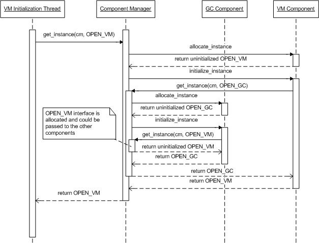
Figure 8: Component Instance Creation
This section contains scenarios describing compilation and execution of managed code.
As mentioned in section 5.3.7 Execution Manager, this component is responsible for distributing requests for compilation (in case of JIT compiler) and execution (in case of interpreter) among execution engines. This component also manages the recompilation process. The generic sequence of handling a method is the following:
do_method() method of the
execution manager.
The VM can suggest that the method is handled by a specific EE during the recompilation requested by the execution manager (see the ME.PGR scenario). However, the execution manager actually selects the engine for execution.
To compile a method on the first attempt to execute it, an OPEN-conformant VM uses trampolines, or compile-me stubs. In this model, the object VTable and the call sites store the address of the compile-me stub for the method until this method is executed. The execution goes in several stages as shown in Figure 9.
do_method() in the execution
manager interface.
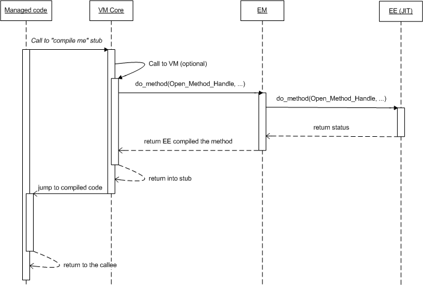
Figure 9: Compilation by JIT
The execution manager serves as a container and a driver for the profile collectors. Irrespective of the organization of the profile collection process, the following sequence of events occurs when the profile is ready:
on_method_profile_ready event to the
execution manager.
recompile_method() VM method and passes
the interface pointer to the execution engine used for
recompilation
Figure 10 demonstrates the recompilation procedure.
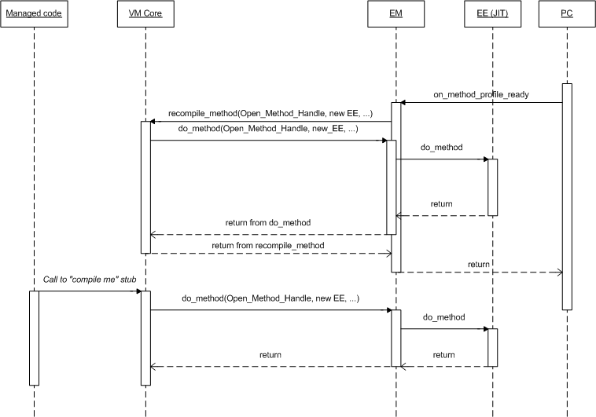
Figure 10: Recompilation by JIT
For details of the compilation process, see the ME.JIT scenario.
This section contains scenarios describing how execution engines and other components instantiate profile collectors, establish dynamic profiling sessions, access profile information, and perform operations related to the dynamic profile-guided optimizations (DPGO).
The interaction between the execution manager and the profile collectors can follow one of the suggested models:
register_profile_collector() function.
Irrespective of the profile collection technique (time or
event-based sampling), the profile collectors notify the
execution manager about the profile readiness by using the
on_method_profile_ready event, with the event
callback implemented by the execution manager.
This section contains scenarios describing the run-time stack iteration, which serves as the basis for stack-related APIs, such as exception throwing and root set enumeration.
Unwinding of compiled managed frames is the basic technique
used by the VM for all stack iteration and destructive stack
unwinding applications, which is illustrated by Figure 11.
For each managed frame the VM calls the
unwind_stack_frame()JIT method, which updates
Open_Stack_Frame_Context, as follows:
Open_Stack_Frame_Context value
corresponding to the stack state for the callee
stack frame, if any
Method_Handle for the method; the
stack will be unwound to the frame of this method
Open_Stack_Frame_Context.
fix_exception_handler_context()to update the
stack pointer as expected on the entry to the exception
handler. This step is only performed when an exception is
handled.
Note
In presence of inlined methods, the unwinding technique is a bit different, as described in the SF.JIT.INL scenario.
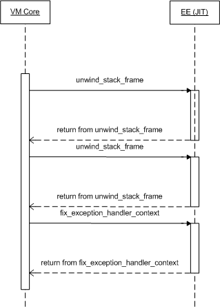
Figure 11: Unwinding the Stack
The following example illustrates the Java* stack iteration process for inlined methods.
void foo()
{
inlined_method_1();
}
void inlined_method_1()
{
inlined_method_2();
}
void inlined_method_2()
{
bar();
}
void bar()
{
...
}
In this example, inlined_method_1() and
inlined_method_2() are inlined and the
bar() method is called from foo,
as shown in Figure 12.
For each call site, the JIT can collect information about the stack of inlined methods. For that, the VM does the following before unwinding the real stack frame:
get_inline_depth() JIT method, which returns
the depth of the stack of inlined methods.
get_inline_depth() function, and calls
get_inlined_method() for each frame.
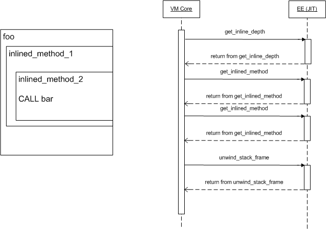
Figure 12: Unwinding an In-lined Compiled Frame
This section contains scenarios, which describe how exceptions are thrown and handled in both managed and unmanaged code.
This scenario describes how an exception is thrown from a compiled frame. The procedure includes several stages as shown in Figure 13.
Stage 1: Creating a helper at method compilation time:
Stage 2: During compiled method execution:
do_method().
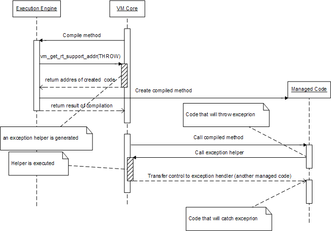
Figure 13: Throwing an Exception from a Compiled Frame
This scenario describes how an exception is thrown from a JNI native code, as shown in Figure 14.
After a JNI native method returns, the caller of the method does the following:
ExceptionOccurred().
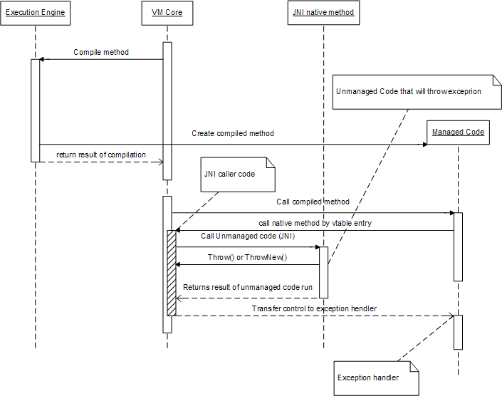
Figure 14: Throwing an Exception from an Unmanaged Frame
This scenario and Figure 15 describe how an exception is handled.
When an exception is thrown, the VM core transfers control to the matching handler, as described in the EX.THR.JIT scenario.
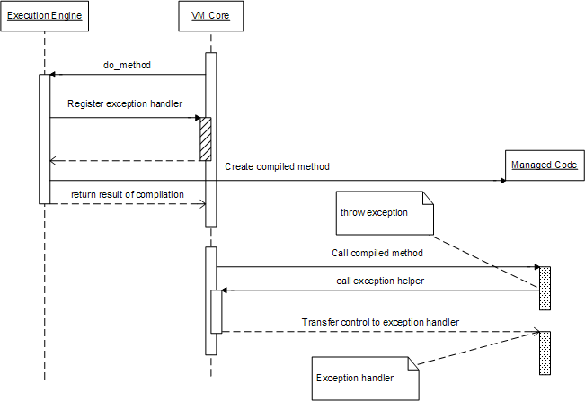
Figure 15: Handling Exceptions
This section contains various scenarios of thread manipulation.
The Java* thread creation procedure consists of the following stages:
java.lang.Thread.start() method in the
kernel classes within the VM core component.
java.lang.Thread.start() method
delegates the call to the tm_thread_create()
method of the thread manager and supplies
thread_proc1 as a pointer to the function
wrapping the Thead.run() method call.
tm_thread_create() method calls the
port_thread_create() method of the OS
Portability layer. This method actually starts the new
native thread. As an argument, this function has a
pointer to the thread_proc2 function that
wraps the thread body.
thread_proc2 wrapping function, which, in
its turn, attaches a new thread to the thread manager
native layer and then attaches the threads to the Java* layer.
java.lang.Thread
object to associate the native thread and the
java.lang.Thread object.
thread_proc1() wrapping function
which does an actual call to Thread.run()
method
Figure 16 illustrates the detailed sequence of thread creation.
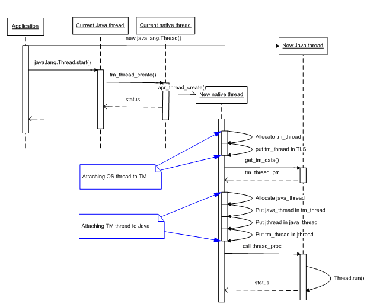
Figure 16: Thread Creation
The thread completion procedure is linked with the thread
creation procedure. During thread completion, the thread
that called the thread_proc1() wrapping
procedure is active (see the thread
creation scenario). The wrapping procedure contains the
Thead.run() method and the code that removes
the thread from the appropriate thread group after the
run() method is completed. Then the
thread_proc1() function returns, and the thread
manager calls the port_thread_exit() function
of the OS Portability layer, which does the actual thread
completion, as shown on Figure 17.
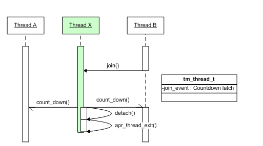
Figure 17: Thread Completion
The purpose of the safe suspension mechanism is to ensure
that the suspended thread can be safely explored by the
garbage collector during the enumeration of live references,
and to guarantee that the suspended thread holds no
system-critical locks, which can be requested by the other
parts of the VM, such as the locks associated with the
native heap memory. The algorithm of safe suspension
describes the protocol of communication between thread T1
and thread T2, which is used by T1 to safely suspend thread
T2. The T1 thread calls the tmn_suspend(T2)
function to suspend thread T2. The procedure goes in the
following stages:
tmn_suspend(T2) function sets a flag for
the T2 thread indicating a request for suspension.
tmn_suspend(T2) function activates one of
the following mechanisms:
tmn_suspend(T2) call
immediately returns.
tmn_suspend()method blocks until
the thread T2 reaches the beginning of a safe
region or a safe point.
tmn_resume(T2).
The T2 thread undergoes the following:
tmn_safe_piont() method to designate the
points of safe suspension.tmn_resume(T2).
tmn_suspend_enable() function, which sets
the safe_region state flag to
true.tmn_suspend_enable() function. This function
sets the safe_region state flag to false and
then invokes the thread_safe_point()method.
The safe suspension scenario is typically applied when the garbage collector suspends a Java* thread to enumerate live references. Figure 18 illustrates the case when the GC component is using the thread manager in order to suspend a Java* thread while it is running in the safe code region.
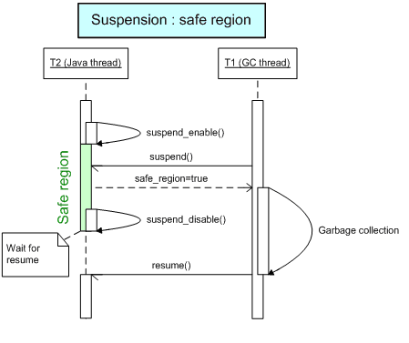
Figure 18: Suspension: Safe Region
Consider the safe thread suspension as if each thread had a lock associated with it. Thread T2 releases the lock when entering a safe region, and acquires the lock when leaving it. In order to suspend thread T2, it is necessary to acquire the lock associated with it. Resuming thread T2 is equivalent to the releasing the lock associated with it. A straight-forward implementation of the safe suspension algorithm reserves a single-thread optimized lock (that is, the thin monitor) for each thread and uses it for suspending and resuming that thread.
This scenario is also applied when a GC thread hits a Java* thread while it is in an unsafe region of code, as shown in Figure 19.
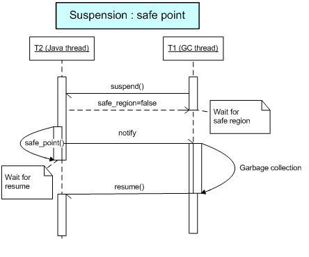
Figure 19: Safe Point
The safe_point() operation corresponds to the
wait operation performed on the monitor
associated with the thread. In this case, the
resume() operation is equivalent to notifying
that monitor.
The stop-the-world thread suspension happens when the garbage collector needs to enumerate the live object references for all threads. Figure 20 illustrates the case when only one GC thread is running and two Java* threads need to be suspended.
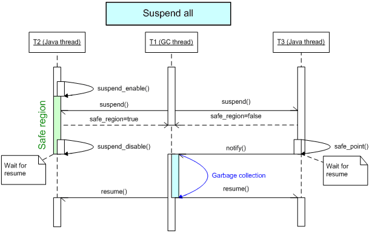
Figure 20: Suspending All Threads
First, the GC calls the suspend_all() function
of the thread manager and instructs this component to
suspend every thread running within the given group (in this
scenario, all Java* threads). The thread
manager returns the iterator for traversing the list of
suspended threads. The GC uses this iterator to analyze each
Java* thread with respect to live references
and then does a garbage collection. After the collection is
completed, the GC instructs the thread manager to resume all
suspended threads.
The thread manager does the locking by using the mutex or the thin monitor. The mutex is preferable in case of high contention, while the monitors are better optimized for space. This section describes the scenario when the VM core attempts to lock a resource from threads T1 and T2. The major stages of the process of locking and unlocking are shown in Figure 21.
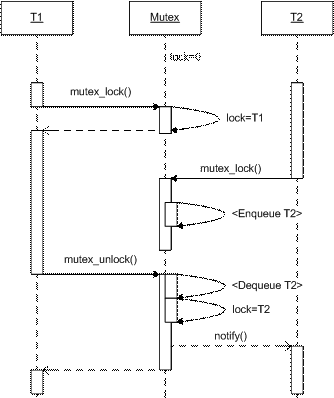
Figure 21: Locking with a Fat Lock
Initially, the mutex is not occupied, that is, the label
lock is set to zero. Thread T1 calls the
mutex_lock() function, which instructs the
thread manager to mark the mutex as locked by T1. T2 can
also call the mutex_lock() later, and if it
happens to call on a lock already occupied, then T2 is put
into the internal waiting queue associated with the mutex
and blocks until T1 unlocks the mutex. The T1 thread calls
mutex_unlock() to release the mutex, which
enables the mutex to extract T2 from the queue, to transfer
the lock ownership to this thread, and then to notify T2
that it can wake up.
Locking Java* monitors implies interaction between the thread manager and VM core because the thread manager must have the memory address within the Java* object where the lock data is stored. The process of locking Java* monitors is shown on the Figure 22.
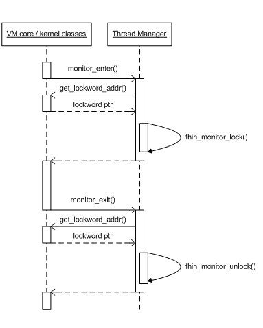
Figure 22: Locking Java* Monitors
When the synchronized section occurs in Java* code, the following steps are taken:
monitor_enter() function
of the thread manager and passes the Java* object as an argument.
get_lockword_addr()
method on VM core component to get the physical address
within the Java* object where the lock
structure is kept.
thin_monitor_lock() function to acquire the
lock associated with this object.
At the end of the synchronized block, the
monitor_exit() function is called, which is
analogous to the monitor_enter() function.
This section contains all scenarios related to memory management for managed code that are related to garbage collection and object lifecycle management.
At startup, the virtual machine can query the following properties to find out whether the GC supports or requires specific features:
gc.requires_write_barrier indicates, whether
the GC requires a write barrier to be executed on each
heap pointer write operation.
gc.requires_read_barrier specifies, whether
the GC requires a read barrier to be executed on each
heap pointer read operation.
gc.supports_frontier_allocation provides
information on GC support for fast thread-local
allocation.
gc.frontier.current_offset and
gc.frontier.limit_offset return the offsets
of the thread-local pool pointers.
gc.compresses_references shows, whether the
GC compresses the VTable and heap pointers.
The virtual machine creates the managed heap and initializes
the garbage collector by calling the GC function
gc_init(). At this point, the VM initialization
sequence is not yet complete and the VM is not ready to do
garbage collection.
The virtual machine indicates the end of its initialization
sequence by calling the GC function
gc_vm_initialized(). This indicates that the VM
is ready for garbage collection. This procedure is
illustrated in Figure 23.
At the VM shutdown, the virtual machine notifies the GC
about shutdown by calling the function
gc_wrapup().
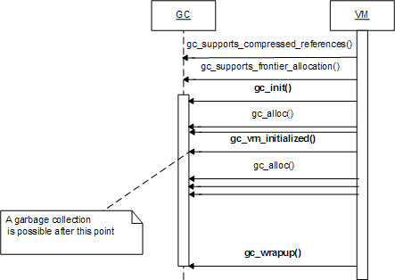
Figure 23: Initializing the Garbage Collector
The VM notifies the garbage collector that the Java* heap is not needed any longer by calling the
function gc_wrapup().
The VM notifies the GC about new classes loaded and prepared
by calling the function gc_class_prepared(), as
shown in Figure 24.
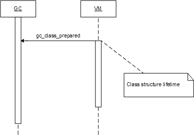
Figure 24: Preparing a Class
The VM notifies the GC about new Java*
thread creation events by calling the function
gc_thread_init(). Just before the Java* thread terminated, the VM calls the function
gc_thread_kill(), as shown in Figure 25.
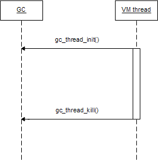
Figure 25: Thread Life Cycle
The Java* thread, which determines that
garbage collection is needed, tries to become the GC
controlling thread by obtaining the global GC lock. The
garbage collector uses the VM function
vm_gc_lock_enum() to obtain the global GC lock.
If the lock is obtained successfully, and the collection is
still necessary, then the garbage collector suspends all
Java* threads by calling the VM function
vm_enumerate_root_set_all_threads(). The same
function call commands the VM to start root set enumeration.
The VM enumerates the root set by calling the GC functions
gc_add_root_set_entry(),
gc_add_compressed_root_set_entry() and others.
The function
vm_enumerate_root_set_all_threads() does not
return until the root set enumeration is complete. After the
completion of
vm_enumerate_root_set_all_threads(), all Java* threads are suspended, and the root set is
completely enumerated, as follows.
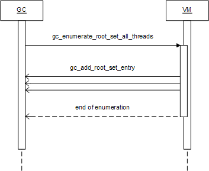
Figure 26: Root Set Enumeration and Threading
The virtual machine delegates the enumeration of compiled
frames to the JIT compiler, which compiled the method
running on a stack frame. The stack frame is identified by
the Open_Stack_Frame_Context structure, which
contains pointers to a snapshot of the machine registers, as
follows.
get_root_set_from_stack_frame().
gc_add_root_set_entry() and several others
to report the root pointers, contained in a stack frame.
JitFrameContext structure to
the next stack frame by calling the JIT function
unwind_stack_frame().
JitFrameContext structure to establish the
owner of the next stack frame. If the
JitFrameContext points to a managed frame,
the process is repeated.
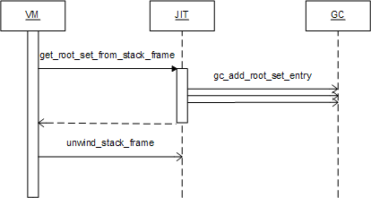
Figure 27: Enumerating a Compiled Frame
The stop-the-world collection algorithm is supported by the following function call sequence:
gc_force_gc() or tries to
allocate an object by calling the function
gc_alloc() when the heap is exhausted.
vm_gc_lock_enum(). A Java* thread that managed to obtain the global GC
lock first becomes GC controlling thread.
vm_enumerate_root_set_all_threads().
gc_add_root_set_entry(),
gc_add_compressed_root_set_entry() and
several others.
vm_enumerate_root_set_all_threads().
vm_resume_threads_after()
and completes stop-the-world phase.
vm_gc_unlock_enum().
gc_alloc() and
repeats the garbage collection if necessary. If the
memory allocation is not possible, an out-of-memory
condition is reported by returning 0.
This stop-the-world garbage collection sequence is illustrated in Figure 28.
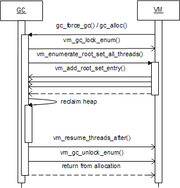
Figure 28: Stop-the-world Garbage Collection
The virtual machine code or the managed code inform the GC
about the heap pointer write operations by calling the GC
function gc_write_barrier(). This function has
three arguments at maximum:
The necessity to call this function is negotiated during the
handshaking phase at VM startup time: the VM and the
execution engine query the property
gc.requires_write_barrier to find out if the
function gc_write_barrier() must to be called
on each heap pointer write operation. If the GC requires
write barriers, the write operation is replaced by the call
to the gc_write_barrier() function.
The virtual machine code or managed code inform the GC about
heap pointer read operations by calling the GC function
gc_read_barrier(). This function receives the
address of the heap location being read, and returns the
read value. The garbage collector can use this function to
keep the heap consistent for the Java*
threads, when they copy objects concurrently with the
execution of a Java* application.
The need to call this function is negotiated during the
handshaking phase at VM startup time: the VM and the EE
query the property gc.requires_read_barrier to
find out if the function gc_read_barrier() must
be called on each heap pointer read operation.
The garbage collector identifies objects that require
finalization during allocation by calling the VM function
class_is_finalizable(). In case the allocated
object is finalizable, the pointer is registered in the
finalizable objects queue.
Then during the collection, the garbage collector detects
that the object can no longer be reached, removes the object
pointer from the finalizable queue, and moves it to the
separate queue of objects eligible for finalization. The GC
transfers the list of eligible objects to the VM by
repeatedly calling the function
vm_finalize_object(). The virtual machine
stores the object pointers and performs the finalization
later by following the implementation-specific algorithm, as
shown in Figure 29.
The garbage collector handles reference objects similarly to
finalizable objects, and transfers the list of reference
objects ready to be enqueued by repeatedly calling the VM
function vm_enqueue_reference().
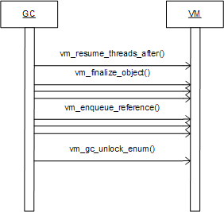
Figure 29: Finalizing an Object
The garbage collector asks the VM to iterate over the list
of existing Java* threads by calling the
function vm_iterate_threads(). The global
thread lock prevents thread creation and termination while
vm_iterate_threads() is running. The VM
iterates through live Java* threads by
calling the GC function gc_iterate_thread().
The garbage collector can save the thread handle or suspend
the thread and enumerate it while holding the global thread
lock. In case the GC does not enumerate the thread
immediately, the thread may terminate at any time.
The GC suspends an individual thread by calling the VM
function vm_suspend_thread() and passing the
thread handle obtained during thread iteration to the
virtual machine. The VM responds by calling the GC function
gc_thread_suspended(). The thread remains
suspended until the function
gc_thread_suspended() returns. The GC requests
the root set enumeration for the suspended thread by calling
the VM function vm_enumerate_thread(). In
response, the VM and the execution engine enumerate the
thread root set using the regular functions
gc_add_root_set_entry() and others.
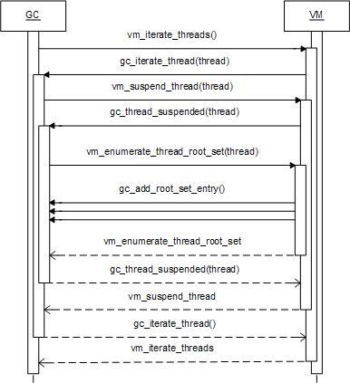
Figure 30: Thread Control
Accessors are constructs of higher level compared to the VM components and do not interact with them directly. Accessors have Java* interfaces and interact primarily with the managed code of Java* class libraries. Therefore, the accessor-related operations described in the subsequent sections are usage scenarios rather than inter-component communication scenarios.
The java.nio package defines the buffer
classes, which are used throughout the native input and output
(NIO) APIs. Buffers can be direct or
non-direct. Given a direct buffer, the system
performs native I/O operations directly without copying the
buffer content from the native to the Java*
layer, Java* arrays. A direct byte buffer is
created by using the allocateDirect() factory
method, which is often mapped directly to the system or the C
library allocation methods, such as malloc()
and VirtualAlloc().
Direct access is provided by using native methods, which
increases the overall cost of accessing such data from the
Java* layer. The memory accessor mechanism
encapsulates all required operations on the native heap, and
provides room for future optimizations by using in-lining or
other JIT techniques. The MemoryAccessor
interface includes the following function groups:
malloc,
realloc, free
getByte,
getDouble,setBoolean
getChar(char[] buf,..)
findFirstDiff,
findFirstDiffReorder
The memory accessor interface enables handling different
native byte orders with methods ending with
Reorder, for instance
getDoubleReorder.
Each memory region allocated by using
MemoryAccessor has the address returned to the
Java* layer as the jlong value.
Example
This example illustrates allocating a memory region and setting and getting double value.
public static final int BUF_SIZE = 32;
public void testMemAcc() {
double a, b = 0.1212;
long addr;
// Get Memory Accessor from the factory.
MemoryAccessor mem = AccessorFactory.getMemoryAccessor();
// Allocate array of size = BUF_SIZE
addr = mem.malloc(BUF_SIZE);
// Set value pointed by address "addr" with the double value b
mem.setDouble(addr, b);
// Get the value from the native buffer.
a = mem.getDouble(addr);>
if(a == b)
System.out.println("OK");
else
System.out.println(a + " != " + b);
mem.free(addr);
} }
Example
The following example illustrates the implementation of
parts of java.nio.ByteBufferDirectImpl by using
the memory accessor.
class ByteBufferDirectImpl extends MappedByteBuffer
implements Cleanable, ByteBufferDirect {
private static MemoryAccessor mem = AccessorFactory.getMemoryAccessor();
private static ArrayAccessor ala = AccessorFactory.getArrayAccessor();
protected transient long addr = 0;
protected transient long addrOffset = 0;
ByteBufferDirectImpl(int capacity) {
super(capacity);
if (capacity > 0) {
isAddrOurs = true;
addr = mem.malloc(capacity);
if (addr == 0) {= 0) {
throw new OutOfMemoryError("Could not allocate " + capacity + " bytes.");
}
mem.memset(addr, (byte)0, capacity);
CleaningManager.getManager().addCleanable(this);
}
}
...
// getting and setting data from the jarray to the native buffer and vice versa
public void getByteArray(byte dst[], int offset, int length) {
mem.getByte(addr + addrOffset + position, dst, offset, length);
}
public void putByteArray(byte src[], int offset, int length) {
mem.setByte(addr + addrOffset + position, src, offset, length);
}
public void putByteBuffer(ByteBufferDirect src, long length) {
mem.memcpy(addr + addrOffset + position,
src.getAddr() + src.getAddrOffset() + ((ByteBuffer)src).position(),
length);
}
// finding differences in between the native buffers.
public int compareTo(ByteBufferDirect src, long length) {
return (int)mem.findFirstDiff(
src.getAddr() + src.getAddrOffset() + ((ByteBuffer)src).position(),
addr + addrOffset + position,
1, length, order == ByteOrder.nativeOrder());
} }
Typically, the mechanism of array locking is used to share memory between a Java* array and a native structure. The traditional way of populating a native structure with values by setting each value via a separate JNI call significantly impacts performance.
The array accessor provides an alternative solution, where an area of memory is filled with the data as a Java* byte array, and the pointer to the array data is passed to a native function as a struct parameter. For that, the array in memory is locked. Locking an array means making it unmovable by the garbage collector by moving the array to a specifically designated area of memory not controlled by the garbage collector or by disabling the garbage collector.
An array can be locked for a short time to perform a short task or for a longer period of time. With short-time locking, the environment must work fast, but is allowed to change the system state so that if the system stays in that state for a long time, undesirable consequences may ensue. The long-period locking has the opposite effect: the locking and unlocking operations may be costly, but the array can stay locked for as long as needed.
Example
In this example, a method reads the image from the native
memory resource into an internal array of
BufferedImage. Because it is required to
perform a pointer arithmetic operation on the array pointer,
it is impossible to pass the array directly to the
automatically generated native wrapper, and array locking is
performed outside the wrapper. Because the native function
is pure calculation and does not presuppose callbacks or
wait for parameters, short locking can be used safely.
ArrayAccessor arrAccess = AccessorFactory.getArrayAccessor(); BufferedImage getResultingImage() {
int data[] = new int[width * height];
...
// Here the array is locked for further usage from native code
LockedArray la = arrAccess.lockArrayShort(data);
long ptr = la.getAddress();
for (int y = height - 1; y >= 0; y--) {
// A wrapper around native library
gdi32.GetDIBits(memDC, memBmp, y, 1, ptr, // <- passed to native
header.ptr, WindowsDefs.DIB_RGB_COLORS);
ptr += width * 4;
}
la.release();
...
}
To restore object values from the serialized objects, stream
serialization code often requires access to the fields not
normally accessible from the Java*
perspective. Usually, this type of access is handled by
using the reflection API or JNI methods, which significantly
impacts the overall performance of serialization
implementation. To avoid this, the object accessor
gathers all required functionality in one place and provides
a generic way to directly access classes and objects from
within the trusted code. This way, the
ObjectAccessor enables the JIT and the VM to
optimize that part of the internal API.
The ObjectAccessor supports the following
groups of operations:
getField/MethodID, getStaticField/MethodID
get ID for methods and fields.
getXXX/setXXX read and write non-static
fields in objects ( XXX stands for a field
type).
getStaticXXX/setStaticXXX read and write
static fields in classes ( XXX stands for a
field type).
invokeStaticXXX calls static methods in a
given class ( XXX stands for return type).
invokeVirtualXXX calls virtual methods for a
given object ( XXX stands for return type).
invokeNonVirtualXXX calls non-virtual
methods for a given class and object ( XXX
stands for return type).
allocateObject, newInstance provide control
over object construction.
hasStaticInitializer provides information
about a given class.
monitorEnter/Exit enter and exit monitor
associated with a given object.
Fields and methods are identified in the class with the help of IDs. Depending on the platform, IDs may or may not represent the real offsets in the physical memory, so you must not rely on the correspondence between IDs and memory address space. However, it is guaranteed that an ID once obtained is valid during the whole lifetime of a given class and can equally be applied for all its instances.
No security checks are made when reading and writing an
object's fields and when calling the object's methods. In
addition to variables, the ObjectAccessor class
also enables setting values for constant fields within an
object.
Example
The example illustrates the implementation of a part of
java.io.ObjectStreamField by using
ObjectAccessor.
public class ObjectStreamField implements Comparable {
// package visible to use from ObjectStreamClass
String name;
//getting an ObjectAccessor instance from the Factory.
static ObjectAccessor dao = AccessorFactory.getObjectAccessor();
........... skipped ..................
// setting boolean field...
final void setBooleanField(Object obj, boolean val)
throws IllegalAccessException {
dao.setBoolean(obj, dao.getFieldID(field), val);
}
final void setByteField(Object obj, byte val) throws IllegalAccessException {
dao.setByte(obj, dao.getFieldID(field), val);
}
final void setCharField(Object obj, char val) throws
IllegalAccessException {
dao.setChar(obj, dao.getFieldID(field), val);
}
final void setShortField(Object obj, short val)
throws IllegalAccessException {
dao.setShort(obj, dao.getFieldID(field), val);
}
final void setIntField(Object obj, int val) throws
IllegalAccessException {
dao.setInt(obj, dao.getFieldID(field), val);
}
final void setLongField(Object obj, long val) throws
IllegalAccessException {
dao.setLong(obj, dao.getFieldID(field), val);
}
final void setFloatField(Object obj, float val)
throws IllegalAccessException {
dao.setFloat(obj, dao.getFieldID(field), val);
}
final void setDoubleField(Object obj, double val)
throws IllegalAccessException {
dao.setDouble(obj, dao.getFieldID(field), val);
}
final void setObjectField(Object obj, Object val)
throws IllegalAccessException {
dao.setObject(obj, dao.getFieldID(field), val);
}
}
This section lists the resources used in this document and other related documents.
Each OPEN component implements the OPEN component default interface to provide inter-component communication via the component manager, as follows:
typedef struct OpenComponent_ {
const char* (*get_name)();
const char* (*get_version)();
const char* (*get_description)();
const char* (*get_vendor)();
const char* (*get_property)(const char*);
OpenInterface* (*allocate_instance) (OpenComponent *this_comp, const char *interface_name);
bool (*initialize_instance) (struct ComponentManager *cm, OpenComponent *this_comp, struct OpenInterface *instance);
/** returns NULL terminated list of names of supported interfaces. */
const char** (*list_VTable_names )();
} OpenComponent_;
Additionally, each component exports and implements the following entry point:
DLL_EXPORT OpenComponent** library_ init();
Function Groups
const char* get_name() returns the unique
name of component.
const char* get_version() returns the
version of component, in the following form:1.0
const char* get_description() returns the
description of component in a readable form
const char* get_vendor() returns the vendor
of component
const char* get_property(const char*)
queries optional component properties
The default interface is used in the following operations:
OpenInterface* allocate_instance(OpenComponent *this_comp, const char *interface_name);
Returns an instance of the required interface or
null.
The interface name is the full interface name,
including the major and minor numbers. If the minor
number is not equal to zero and the component
implements OPEN interfaces with other minor number,
then this function returns null.
bool (*initialize_instance) (struct ComponentManager *cm, OpenComponent *this_comp, struct OpenInterface *instance);
Initializes private data, obtains required OPEN interfaces from other OPEN components, and stores these interfaces as private data for further use.
DLL_EXPORT OpenlComponent** library_ init();
Creates an array of instances of
OpenComponent terminated by null.
Each component is deployed in the following location:
bin/<debug_release><os>_<arch><compiler>/<component_name>
Where:
<debug_release> is the
debug or the release version of
component
<os> is the deployment operating
system: windows or linux
<arch> is the deployment processor
architecture: ia32 or em64t or
ipf for the Itanium* processor family
<comp> is the compiler:
intel or gcc, g++
or ms
The OPEN specification defines the following standard names,
and the default format of OPEN components. Each binary file
name has the appropriate file name extension, which is not
shown in the table, exe for platform executable
on Windows* and no extension for platform
executable on Linux*, dll for
dynamically linked library on Windows* and
so for dynamically linked library on Windows*, and so on.
| Component | Binary File Name | Delivery format |
| VM core |
ij
|
Platform executable |
| Thread manager |
tm
|
Dynamically linked library |
| Garbage collector |
gc
|
Dynamically linked library |
| OS portability layer |
port
|
Statically linked with VM core |
| Execution manager |
em
|
Dynamically linked library |
| Execution engine |
ee
|
Dynamically linked library |
| Profile collector |
pc
|
Dynamically linked library |
Upon component creation, the component manager tries to locate the other components by following the specified paths. To override the default locations of the components, use the command-line arguments or property files.
8.2.2.1 Components and Interfaces
The name of each OPEN interface corresponds to the components structure, and is a string of the following format:
open.interface .<prefix>.<interface>.<major number>.<minor number><optional_string>
For example,
#define OPEN_VM_EE_COMPILE_TIME "open.interface.vm.ee_compile_time.1.0"
Table: OPEN Naming Conventions
| Component | Prefix | Interfaces | #define | Name of Base Version |
| VM core |
vm
|
VM Generic
|
OPEN_VM
|
open.interface.vm.generic.1.0
|
VM_EE Compile time
|
OPEN_VM_EE_COMPILE_TIME
|
open.interface.vm.ee_compile_time.1.0
|
||
VM_EE Runtime
|
OPEN_VM_EE_RUNTIME
|
open.interface.vm.ee_runtime.1.0
|
||
VM Helpers
|
OPEN_VM_HELPERS
|
open.interface.vm.vm_helpers.1.0
|
||
VM_GC
|
OPEN_VM_GC
|
open.interface.vm.vm_gc.1.0
|
||
C VM Interface
|
N/A | N/A | ||
JNI
|
N/A | N/A | ||
JVMTI
|
N/A | N/A | ||
Kernel classes
|
N/A | N/A | ||
| Execution manager |
em
|
EM Generic
|
OPEN_EM
|
open.interface.em.generic.1.0
|
PC Event Callback
|
OPEN_EM_EVENT_CALLBACK
|
open.interface.em.event_callback.1.0
|
||
| Thread manager |
thread
|
Thread Generic
|
OPEN_THREAD
|
open.interface.thread.generic.1.0
|
Locker
|
OPEN_THREAD_LOCKER
|
open.interface.thread.locker.1.0
|
||
Manipulator
|
OPEN_THREAD_MANIPULATOR
|
open.interface.thread.manipulator.1.0
|
||
| VM accessors | N/A | N/A | N/A | |
| Platform accessors | N/A | N/A | N/A | |
| Garbage collector |
gc
|
GC Generic
|
OPEN_GC
|
open.interface.gc.generic.1.0
|
| Profile collector |
pc
|
PC Generic
|
OPEN_PC
|
open.interface.pc.generic.1.0
|
| Execution engine |
ee
|
EE Generic
|
OPEN_EE
|
open.interface.ee.generic.1.0
|
EE Runtime
|
OPEN_EE_runtime
|
open.interface.ee.runtime.1.0
|
||
JPDA
|
OPEN_EE_JPDA
|
open.interface.ee.jpda.1.0
|
||
| OS Portability Layer |
port
|
Generic Portlib API
|
OPEN_PORT
|
open.interface.port.generic.1.0
|
static
|
OPEN_PORT_STATIC
|
open.interface.port.static.1.0
|
8.2.2.2 Interface Names and Header Files
This example contains the code of the execution engine generic interface header file.
/*
* Execution engine generic interface
*/
typedef const struct OpenEeGeneric_ *OpenEeGeneric ;
/*
* Execution engine generic VTable
*/
typedef struct OpenEeGeneric_ {
/**
* Comments ...
*/
NativeCode (*jit_compile_method_01) (OpenVmClassStructure*, MethodHandle method);
/**
* Comments ...
*/
NativeCode (*jit_compile_method_02) (OpenEeGeneric *instance, MethodHandle method);
// more functions
} OpenEeGeneric_ ;
/*
* Execution engine generic interface version
*/
#define OPEN_EE "open.interface.ee.generic.1.0"
#ifdef __cplusplus
}
#endif
Note
Internal interface complexity is concentrated in the OPEN component default interface, and not in individual OPEN interface header files.
The following table maps the OPEN component structure to the directory structure.
Table: Directory Structure
| Component | Prefix | Interfaces | Header files |
| VM Core |
vm
|
VM Generic
|
include/open/vm.h
|
VM_EE Compile time
|
include/open/vm_ee.h
|
||
VM_EE Runtime
|
include/open/vm_ee_rt.h
|
||
VM Helpers
|
include/open/vm_helpers.h
|
||
VM_GC
|
include/open/vm_gc.h
|
||
C VM Interface
|
N/A | ||
JNI
|
include/jni.h
|
||
JVMTI
|
include/jvmti.h
|
||
Kernel classes
|
N/A | ||
| Execution manager |
em
|
EM Generic
|
include/open/em.h
|
PC Event Callback
|
include/open/em_event_callback.h
|
||
| Thread manager |
thread
|
Thread Native
|
include/open/thread_native.h
|
Thread Java
|
include/open/thread_java.h
|
||
| VM accessors | N/A | N/A | |
| Platform accessors | N/A | N/A | |
| Garbage collector |
gc
|
GC Generic
|
include/open/gc.h
|
|
Profile collector |
pc
|
PC Generic
|
include/open/pc.h
|
| Execution engine |
ee
|
EE Generic
|
include/open/ee.h
|
EE Runtime
|
include/open/ee_runtime.h
|
||
JPDA
|
include/open/ee_jpda.h
|
||
| OS Portability Layer |
port
|
APR
|
port/src/include/port_atomic.h
|
| Other than APR |
port/src/include/port_invoke_JNI.h,other |
The OPEN major and minor numbering scheme is used for consistent naming of OPEN interfaces to enable extensibility. According to the scheme, the interface name includes the following numbers:
The open.interface.em.generic.1.0 is a base
version and has the following hierarchy of extended
interfaces:
open.interface.em.generic.1.1 is backward
compatible with
open.interface.em.generic.1.0.
open.interface.em.generic.1.2 is backward
compatible with
open.interface.em.generic.1.0.
open.interface.em.generic.1.2 and
open.interface.em.generic.1.1 are
incompatible.
If open.interface.em.generic.1.1 contains
useful functionality, then this version can become the next
base version open.interface.em.generic.2.0 by
community decision. The implementer of version
open.interface.em.generic.1.2 can extend 2.0 by
adding useful functionality from version 1.1, and create the
version 2.<new number> version.
Note
The community decides about backward compatibility between different OPEN major versions. For example, the community may consider that OPEN 5 is incompatible with OPEN 4, in other words, the OPEN interfaces with major number 4 can not be plugged onto OPEN 5 interfaces, but OPEN 4 is compatible with OPEN 3, so that OPEN interfaces with major number 3 can be plugged onto the OPEN 4 environment.
�
(C) Copyright 2005-2006 Intel Corporation
* Other brands and names are the property of their respective owners.